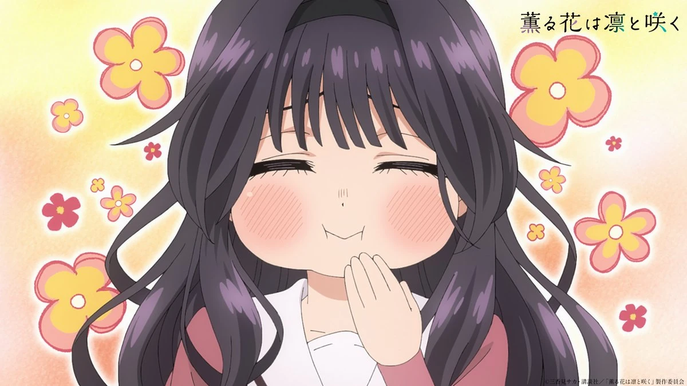
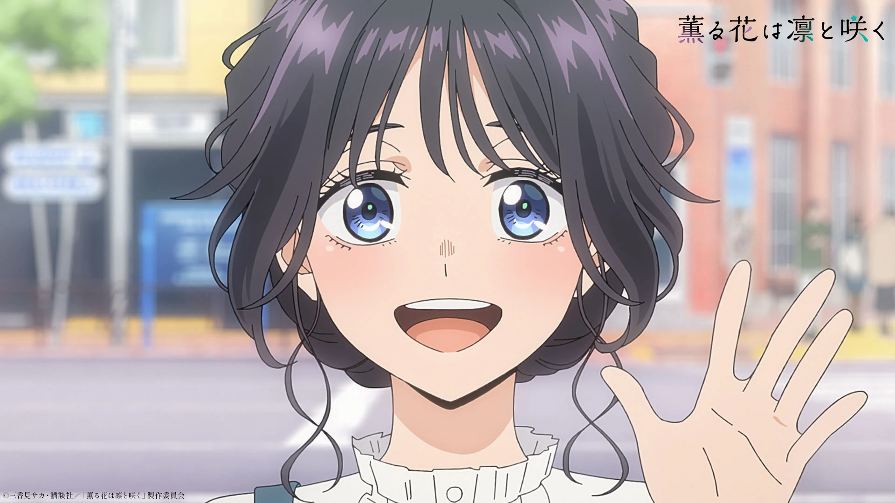

Galeri Momen
Scroll — stills resmi dari episode anime.

STILL · EP 1Tatapan yang jujur — tanpa kepura-puraan.

STILL · EP 2Ketulusan yang bikin orang di sekitarnya luluh.

STILL · EP 3Lembut di luar, kuat di dalam.

STILL · EP 4Bunga yang mekar dengan martabat.